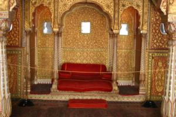

Le 5 décembre 2004,
Entre le froid du à l’impossibilité de fermer convenablement les fenêtres du train et le silence à l’indienne, nous débarquons littéralement extenués à Bikaner, vers sept heures du matin. Remarquons que la seule fois où cela ne nous aurait pas dérangés, un transport arrive en avance !
 Bikaner, cité du désert, fut jadis un passage obligé sur la route des caravanes du Rajasthan. Aujourd’hui, la vieille ville est plutôt sale et poussiéreuse et le seul endroit digne d’intérêt est le magnifique Junagarh bâti a la fin du XVIe siècle par un général de l’empereur Akbar (encore lui !). Contrairement à Amber, ce fort est presque totalement restauré et des travaux sont toujours en cours, surtout en ce qui concerne les décorations intérieures. Les salles sont aménagées comme à l’époque (lits, draperies, couvertures, tapis, et collection d’armes)
Apres avoir trouvé un peu de paix dans le fort et ne nous sentant toujours pas à l’aise dans cette ville, nous décidons de nous échapper à quelques trente-deux kilomètres vers le village de Deshnok. Le trajet en rickshaw est plutôt long (une bonne heure), mais permet de nous reposer les yeux en observant la steppe aride à l’orée du désert.
A l’arrivée nous attend le temple de Karni Mata, habité par des centaines de rats. Ces derniers sont heureusement inoffensifs car nourris quotidiennement, notamment avec de grandes bassines remplies de lait. Le chauffeur du rickshaw nous propose de boire un chai. Un villageois qui partage notre table nous fait remarquer qu’on ne trouve aucun rat en ces lieux, à part au sein du temple. Quelle force mystique les retient la ? Nul ne le sait ...
Nous rentrons dîner à Bikaner. Dans le restaurant, un marchand local nous aborde, désireux de se faire corriger ses lignes de français rédigées dans un cahier d’exercices. En échange, il nous propose une réduction pour un safari à dos de chameau. Encore un qui ne perd pas le nord. Remarque, dans le désert, ça peut toujours servir !
Nous partons nous coucher tôt, car demain matin notre bus "deluxe" nous attend a cinq heures pour nous emmener à Jaisalmer, la ville dorée.
Michaël
J’espère que vous n’avez pas hésité à faire le tour derrière l’autel du temple de Shri Karni Mata. Emotion garantie quand tu rencontres un rat pieds nus dans la pénombre... Pour l’absence de rats dans Deshnoke, j’ai une théorie, mais je te vois déjà dire que je suis trop rationnel et pas assez éveillé aux mystères de l’univers. Tant pis je me lance quand même : vu comment ils sont choyés et nourris, j’imagine que la force mystique s’apparente plus à l’odeur de quelques mets délicats (pour leur palais...) et qu’ils n’ont pas forcément envie d’aller voir ailleurs (si tant est qu’ils puissent encore se déplacer aussi loin que l’entrée du temple).
Pour Bikaner, vous avez bien raison de ne pas être resté. Hormis le fort que j’avais trouvé vraiment impressionnant (surtout pour son niveau de restauration), point d’intérêt. Avant de fuir, nous nous étions quand même fait dans un pauvre atelier de peinture, dont le proprio était censé être détenteur du record du monde du nombre de feuilles sur une peinture... Impressionnant, mais encore faut-il aimer son style de peinture.
En tout cas, j’espère que vous avez fait quelques photos à coté du basilic magique (sur la terrasse du fort) ? C’est complètement ridicule, mais ça nous avait bien fait rire.
{kind=link}